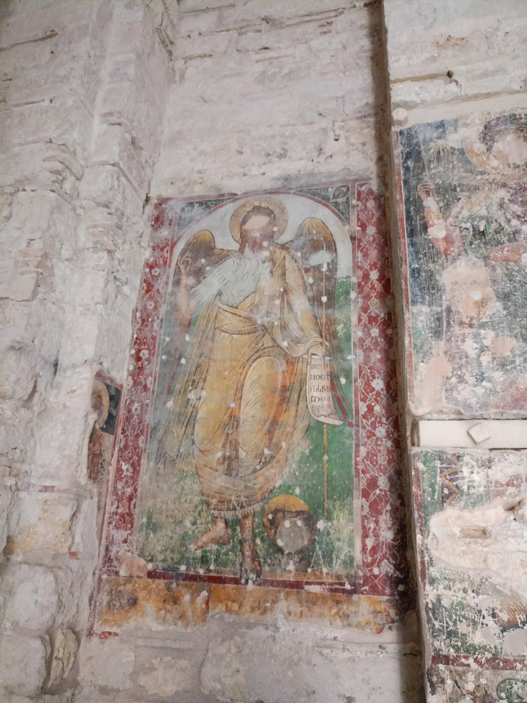
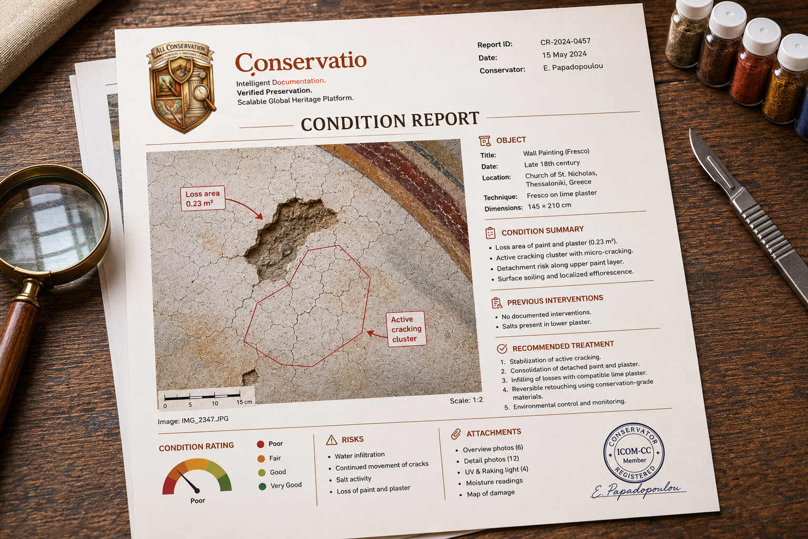
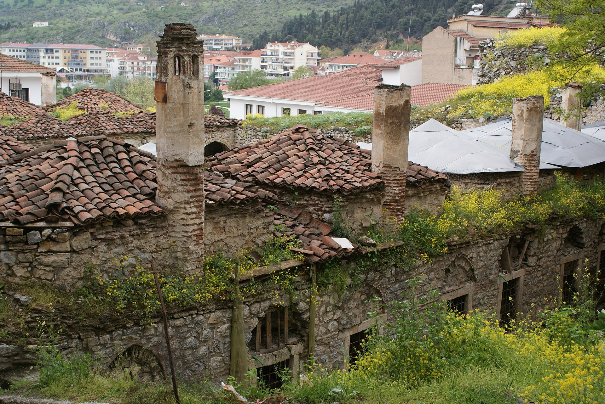
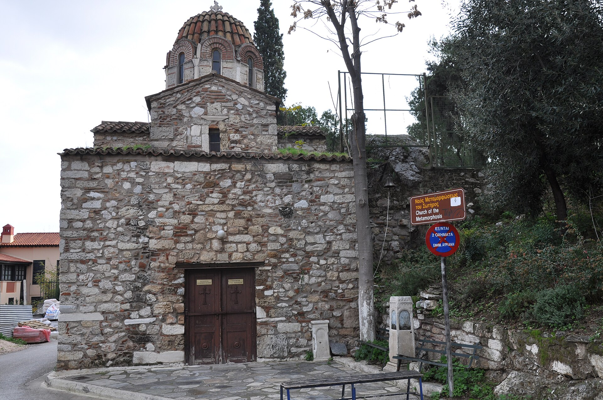

Condition reports forcultural heritage.
Structured condition reports, damage marked directly on the photograph, and a bilingual PDF at the end. Built for conservators, museums, churches and archaeological teams, and built to work with no signal at all.
Nothing is released yet. Conservatio is in active development. There is no App Store listing, no Play Store listing and no public build: the iOS, Android and web clients run from source only. Everything below describes what is built and working in the repository today, not what you can download.

- Damage
- Paint loss
- Condition
- Poor
- Affected area
- 0.23 m²
- Pointer, at 1:2
- tap or move across
Three recorded observations on a wall painting in the Monastery of Daphni, Athens. Tap a marker, or move across the photograph to read the position off it.
One observation, three times.
A photograph on its own is evidence of nothing. It needs to say what is wrong with the object and how much of it.
Marked on the photograph itself, with a type from a controlled list, a severity and a measured extent. This is the step that makes the rest automatic.
The same observation, printed into the condition report with its rating and its place in the overall condition. Nobody retyped it.
From first look to signed report.
A condition report is a sequence, not a form. Conservatio keeps the sequence and takes the retyping out of it, so the document at the end matches what was actually on the wall.

On site
Back at the desk
To the client
What the app holds.
- Title
- Wall painting (fresco)
- Date
- Late 18th century
- Location
- Church of St Nicholas, Thessaloniki
- Technique
- Fresco on lime plaster
- Dimensions
- 145 × 210 cm
- Conservator
- E. Papadopoulou
Where it runs today.
None of this is released. iOS is the most complete client, Android and the web companion are behind it, and this list says exactly how far each one has got in the repository.
iOS, native SwiftUI, runs from source
Android, Jetpack Compose and Material 3, runs from source
Web, desktop companion, the only part you can open today

Who it is for.
Conservatio fills the gap between a folder of Word files and an enterprise collections system. It is sized for the people who actually hold the scalpel.
Private conservators get fast reports and professional PDFs with less admin. Small museums get affordable object inventory, condition history and maintenance tracking. Churches and heritage sites get a simple photo-based record, a maintenance calendar and a restoration history.

The code is published for transparency and personal evaluation. Read it, run it, and tell me what a real condition report needs that this does not have yet.